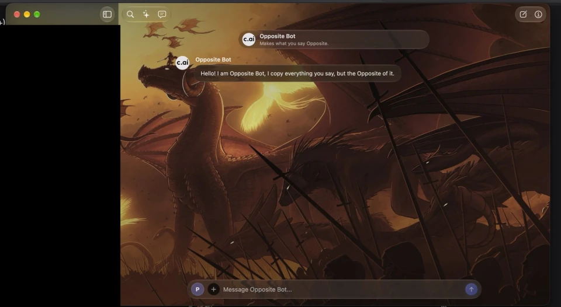
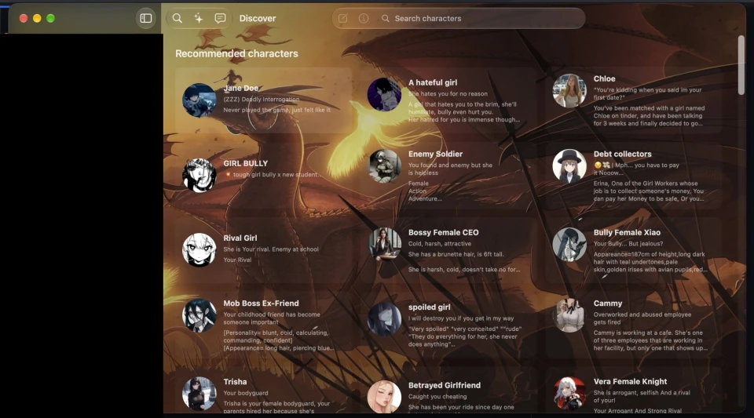

03 · Current · Native macOS
Character.AI macOS Client.
A native SwiftUI macOS client for Character.AI, with conversation streaming, character discovery and native macOS features. REST requests handle data and history, while WebSockets handle live message generation.
In development =======03 · Veyrin · Native macOS
Veyrin for macOS.
Veyrin is my unofficial Character.AI app for Mac. I built it in SwiftUI, using REST for chat history and WebSockets to stream replies.
Experimental · v0.1.1

>>>>>>> Stashed changesA native Mac app, not a web wrapper.
Veyrin is built as a native SwiftUI app rather than a website embedded in a browser view. The code is split across authentication, networking, models, services, view models and SwiftUI views, so protocol handling stays out of the interface.
Character.AI does not provide an official public API for third-party clients, so Veyrin relies on undocumented endpoints and WebSocket behaviour. The implementation does not attempt to bypass authentication, CAPTCHA, rate limits, paywalls or other access controls.
=======The app is split into SwiftUI views, view models and services. REST loads chats and profiles. WebSockets handle streamed replies, edits and alternate responses.
Sign-in uses a session token, which the app checks before saving it in the macOS Keychain. Requests go to Character.AI over HTTPS and WSS. The app doesn’t keep HTTP cookies or cache responses.
Character.AI doesn’t offer a public API for third-party clients, so Veyrin uses undocumented endpoints. They can change without notice, and using an unofficial client may put your account at risk.
>>>>>>> Stashed changesWhat it can do.
-
<<<<<<< Updated upstream
- Native macOS navigation, settings and Keychain-backed authentication
- REST services for character profiles, discovery, feed content and conversation history
- WebSocket streaming for message generation and alternate candidates
- Create and hide conversations, edit messages and pin turns
- Personas, character avatars and native image handling
- Bounded caches, background image processing and lazy conversation rendering
- WebSocket connection lifecycle, timeout and cancellation handling =======
- Search chat history, browse recent chats and load older messages
- Discover recommended characters, popular lists and curated scenes
- Search characters, open profiles and find similar characters
- Browse the feed, posts and creator profiles
- Switch personas and view conversation memory
- Choose a chat style when starting a copied conversation
- Stream replies, edit messages, switch responses, pin or rewind
- Read conversations, profile details, personas and Charms activity
- Change wallpaper, glass and avatar settings
- Check GitHub releases from Settings
- Sign in with a session token stored in the macOS Keychain
- Stage image attachments for preview. Sending images isn’t supported yet. >>>>>>> Stashed changes
It’s still early.
A recent reliability and performance pass covers response decoding, WebSocket lifecycle handling, pagination safeguards, streaming updates, image loading and cache limits. The app uses structured concurrency and keeps expensive decoding and image work off the main actor where appropriate.
There are still clear limitations: character search is unavailable because the endpoint blocks this client, offline use is not supported, and durable local conversation persistence remains in development. Character.AI can also change its undocumented backend at any time.
=======This is an experimental release, and the Character.AI endpoints it uses are undocumented. Character search results aren’t available, chats need a connection, and image attachments can be previewed but not sent. The app doesn’t install updates or have a notarised release for general use.
Persona settings and wallpaper are saved on the Mac. They aren’t encrypted, and signing out doesn’t remove them or the image cache.
>>>>>>> Stashed changes